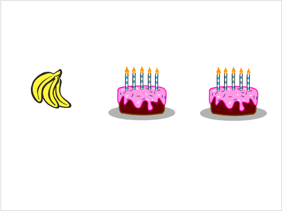
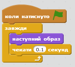
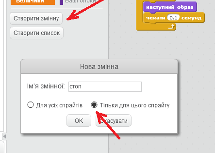
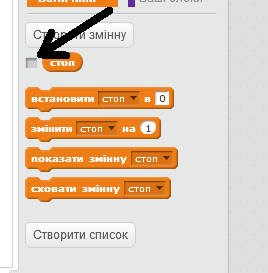
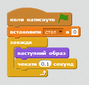
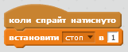
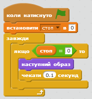
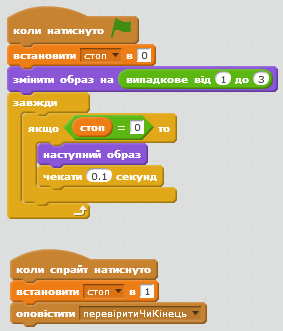
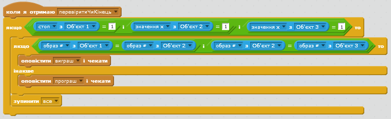
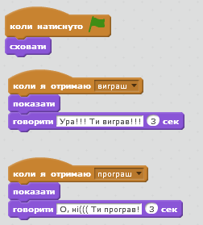

Гральний автомат
Передмова:
У цій грі є три спрайти, які постійно змінюють вигляд. Якщо клікнути на будь-якому - він в той же час зупиняється і більше не змінюється. Необхідно по черзі зупинити кожен у той момент, щоб всі вони мали однаковий вигляд (як у гральному автоматі).
Крок 1: Створення спрайту, який змінює образи.
- Почни новий проект у Скретч. Видали спрайт кота, натиснувши праву кнопку мишки і вибравши "Вилучити".
- Імпортуй новий спрайт.
Вибери малюнок з будь-якої папки бібліотеки спрайтів. Ми використали папку "Речі", обравши банани, але можна обрати будь-яке зображення. - Зайди у вкладку Образи цього об'єкта та додай ще 2 картинки, щоб разом їх було 3 (ми вибрали Тварини/beetle та Речі/cake-a, але можна обрати будь-які інші).
Тепер у нас є декілька образів, треба лише, щоб спрайт почергово їх змінював.
Крок 2: Почергова зміна малюнків
- Зайди у вкладку Скрипти новоствореного об'єкта.
- Обери групу команд з подіями і перетягни блок "коли натиснуто зелений прапорець" у поле скриптів. Команда почне виконуватись при натисканні на зелений прапорець.
- Додай у поле скриптів блок "завжди" так, щоб він замкнувся в кінці скрипту.
- Натисни на зелений прапорець праворуч вгорі. Зверни увагу на підсвічений контур навколо скрипта. Він почав виконуватись, бо натиснули на зелений прапорець, що запускає проект.
- Зайди у вкладку Вигляд і перетягни всередину блока "завжди" блок "наступний образ". Перевір, чи змінюються малюнки (образи) у об'єкта.
- Як уповільнити його, щоб зміна не відбувалась так швидко? У вкладці Керувати вибери блок "чекати 1 сек". І додай його в кінець блока "завжди".
- Відредагуй час так, щоб усе відбувалось швидше (0.1 секунда часу підійде, розділовий знак - крапка). Що сталось би, якби ми не додали блок очікування? 
Протестуй свій проект
Натисни на значок із зеленим прапорцем. Чи змінюються образи з належною швидкістю?
Спробуй:
Змінювати час у блоці очікування. При яких значення часу буде значно простіше/складніше грати?
Крок 3: Образи перестають змінюватись при кліканні на них.
Чудово! Ми змогли зробили так, щоб спрайти весь час змінювали образи, але що треба, щоб вони перестали мінятись після клікання на них?
- Створи нову змінну, зайшовши у вкладку "Величини" і обравши "Створити змінну". Назвіть її "стоп" та створіть її тільки для цього спрайту, зніміть галочку поряд з блоком змінної "стоп", щоб вона не відображалась на сцені.  
- Розмісти блок "встановити стоп в 0" під блоком "коли натиснуто прапорець". 
- Надай змінній "стоп" значення 1, коли на картинку клікають, за допомогою команди "коли спрайт натиснуто" і команди "встановити стоп в ..". 
- Тепер необхідно зробити так, щоб образи припинили змінюватись, коли змінна "стоп" рівна одиниці. У вкладці "Керувати" додайте до циклу "завжди" умову "якщо то" і використайте в ньому оператор "=" із вкладки Оператори, щоб перевірити, чи змінна "стоп" дорівнює нулю. 
Після того, як ми клікаємо по спрайту, змінній стоп присвоюється значення один. І при перевірці умови "стоп = 0", блоки, які знаходяться в циклі більше не виконуються.
Протестуй свій проект
Натисни на зелений прапорець, трошки зачекай і потім клікни на спрайт.
Чи змінює спрайт образ до того, як на нього клікнути?
Чи припиняє він змінювати образи, коли на нього клікнути?
Запустіть спрайт знову. Чи припиняє спрайт змінювати образи, коли на нього наведено курсор без клікання мишкою?
Чи припиняє спрайт змінювати образи, коли клікнути у будь-якому місці сцени, вікна програми чи за його межами?
Крок 4: Створення іншого спрайта.
Нам потрібно створити інші спрайти, щоб можна було грати в гру.
- Продублюй цей об'єкт клікнувши на нього правою кнопки мишки і обравши команду "дублювати".
- Ще раз продублюй об'єкт, щоб усього їх стало три.
- Перейменуй ці об'єкти на "Об'єкт 1", "Об'єкт 2" та "Об'єкт 3"
- Розташуй спрайти на одній лінії. Зменши їх, якщо потрібно.
Протестуй свій проект
Натисни на зелений прапорець.
Усі спрайти повинні змінюватись. Спробуй зупинити спрайти, коли у них однаковий образ.
Спробуй:
Коли запускається гра, усі спрайти в однакових образах і потім одночасно змінюють їх. Як щодо випадкового вибору образу кожним спрайтом при натисканні зеленого прапорця? Підказка: спробуйте команди "змінити образ на" та "вибрати випадкове від" для кожного спрайта після запуску гри.
Молодець! Створення основної гри завершено, але є ще деякі речі, які можна зробити у грі. Спробуй виконати ці бонусні завдання!
Бонусне завдання 1: Гра стає складнішою.
Якимось чином ускладніть гру. Пришвидшення зміни образів – це дуже просто. Спробуйте щось цікавіше. Ось деякі ідеї:
- Зміни кількість образів кожного спрайту.
- Створи унікальні образи, які не повторюються у кожного із спрайтів.
- Зроби різними часові інтервали між змінами образів.
- Пропиши для кожного спрайту випадковий вибір образу, а не послідовну їх зміну.
Спробуйте придумати і свої варіанти ускладнення гри!
Кожного разу вносячи зміни, подумай спрощують вони гру чи ускладнюють. Як скоригувати складність так, щоб вона була прийнятною?
Бонусне завдання 2: Чи всі спрайти мали однакові образи, коли їх зупинили.
Ціль гри - зупинити спрайти в той момент, коли вони в однакових образах. Було б добре, якби на сцені після того, як гравець закінчив гру, виводилась інформація про те, виграв він чи програв (на основі перевірки ідентичності образів спрайтів у момент клікання).
По-перше, сцена повинна знати, коли гравець завершив гру. Для цього сцена повинна перевірити, чи всі спрайти перестали рухатись, коли на один з них клікнули. Поверніться і змініть у кожен з блоків "коли спрайт натиснуто" так, щоб вони виводили нове повідомлення "перевіритиЧиКінець".
Сцена може відповідати на це повідомлення і перевіряти, чи завершилась гра, а саме, чи усі три змінні "стоп" наших спрайтів мають значення 1. Використовуємо для цього команду вкладки Датчики "значення х з Об'єкт" для кожного спрайту. Якщо всі три спрайти зупинились на значенні 1, то це означає, що гра завершена і можна перевіряти, чи виграв гравець.
Для того, щоб перевірити, чи мали спрайти однакові малюнки, треба використати блок "якщо" для перевірки змінних "стоп" та всередині нього блок "якщо інакше" для з'ясування факту виграшу чи програшу гравця шляхом порівняння образів спрайтів.
Відтепер можна повідомляти про результат гри, використовуючи інший спрайт для отримання та передачі повідомлень. Може, повернути Фелікса, щоб він привітав гравця чи поспівчував йому?
Збережи свій проект.